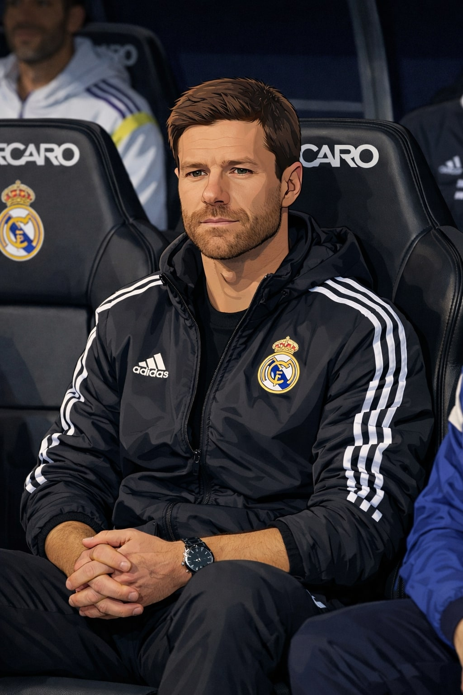

Xabi Alonso no pudo ser Xabi Alonso
El técnico dejó el Real Madrid tras no poder imponer su idea en un vestuario lleno de estrellas. La Supercopa fue el último termómetro de un proyecto que nunca terminó de despegar.
Xabi Alonso se fue —o lo fueron— con la espina de no haber podido imprimir su identidad. Un entrenador con ideas claras que chocó con la complejidad del banquillo del Bernabéu.
Leer más